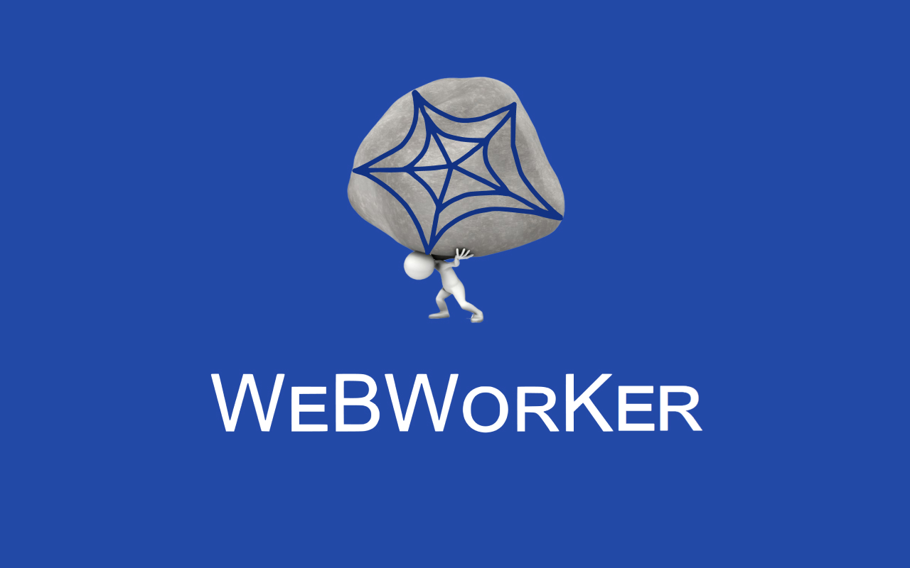
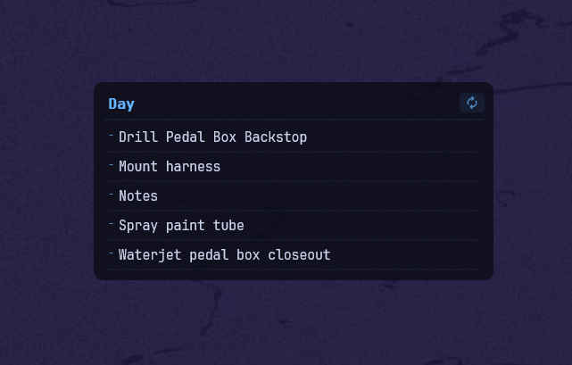

What I've built.
Every project began with a real problem, then evolved through iteration into something practical, reliable, and worth building.
FSAE Chassis Design and Manufacture
Led the design and manufacture of the 2026 UBC Formula Electric chassis, including the 4130 chromoly space frame, structural analysis, manufacturing drawings, welding fixtures, and frame fabrication.

MEMS Soft-Actuated Hand
A tendon-driven prosthetic hand developed at the UBC MEMS Lab to demonstrate soft pneumatic robotic actuators, refined through 3D-printed iterations and custom-molded silicone return bands.

Vehicle Controller Enclosure & IPX5 Test Rig
Led enclosure design, solved a vehicle-level packaging conflict with a stacked two-board controller, and built a standards-based IPX5 test nozzle for about $50.

Suspension Load Analysis Pipeline
Full Python pipeline replacing legacy MATLAB scripts: Pacejka MF5.2 tire model, eight design load cases, upright statics, and ANSYS-ready chassis load exports.

MECH 223 Rail Hauler
Designed and built a model train style vehicle to carry a load around a track, and set up the self-hosted SVN server that kept a five-person team's CAD from falling apart. Full fabrication using machining, laser cutting, and 3D printing.

DanBot: 3D Printing Command Center
A Slack bot with Model Context Protocol (MCP) server integration for 3D printer monitoring and server status tracking.

SVNWORKS: CAD Version Control + Team Infra
A Windows application that brings SVN file locking and repository status into the SOLIDWORKS file-opening workflow, backed by an SVN server deployed on Oracle Cloud.
AI-Driven Predictive Maintenance System
Course project (MANU 465) applying five ML techniques — Logistic Regression, Random Forest, an ANN, PCA, and Isolation Forest — to predict maintenance needs and detect anomalies from 100,000 IoT sensor records. Report auto-regenerates from the notebook's own output.

WeBWorKer Chrome Extension
A browser extension with over 500 users to enhance the user experience on WeBWorK by streamlining problem content. Built using JavaScript, HTML5, and the html2canvas library.

Miscellaneous Utilities
A collection of focused tools, including the UBC MECH Degree Planner, Shop Inventory System, and smaller scripts and desktop utilities.
